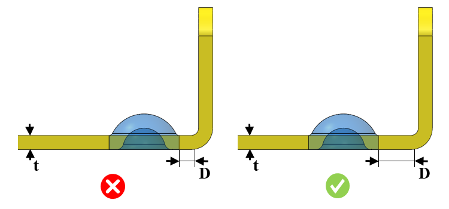

ディンプルから曲げ部までの最小距離は、指定された値以上である必要があります。
金属の変形および破断を防ぐため、ディンプル形状と曲げ形状の間には一定の最小距離を確保する必要があります。
一般的なガイドラインとして、ディンプルから曲げ部までの最小距離は板厚の 4 倍とすることが推奨されます。
ルール UI では、材料のリストは Map Material から読み込まれ、ユーザーは材料とその値を構成できます。
材料とその値を構成した後、ユーザーは Ctrl+M コマンドを使用して、ルール UI 内で材料グループおよびグレード付きの構成済み材料のリストをフィルタリングして表示できます。同じキー（Ctrl+M）はフィルターをリセットするためにも使用されます。

ここでは、
t = 板厚
D = ディンプルから曲げ部までの最小距離